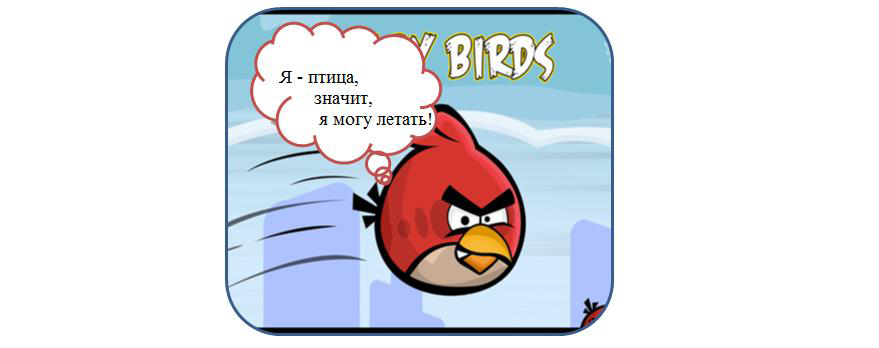

11. Домашние и бонусные задания
- Здорово, боец!
- Здравия желаю, товарищ генерал!
- У меня для тебя шикарная новость. Вот тебе задания для закрепления полученных навыков. Выполняй их каждый день, и твои навыки будут расти с неимоверной скоростью. Они специально разработаны для выполнения их в Intellij IDEA.
| Дополнительные задания для выполнения в Intellij Idea |
|---|
| 1. Некорректные строки Удали все некорректные строки в интерфейсе Button. |
| 2. Погода 1. В классе Today реализовать интерфейс Weather. 2. Подумай, как связан параметр String type с методом getWeatherType(). 3. Интерфейсы Weather и WeatherType уже реализованы. |
| 3. Чтение файла 1. Считать с консоли имя файла. 2. Вывести в консоль(на экран) содержимое файла. 3. Не забыть освободить ресурсы. Закрыть поток чтения с файла и поток ввода с клавиатуры. |
| 4. Запись в файл 1. Прочесть с консоли имя файла. 2. Считывать строки с консоли, пока пользователь не введет строку "exit". 3. Вывести все строки в файл, каждую строчку с новой стороки. |
| 5. Neo 1. Реализовать интерфейс DBObject в классе User. 2. Реализовать метод initializeIdAndName так, чтобы программа работала и выводила на экран "User has name Neo, id = 1". 3. Метод toString и метод main менять нельзя. 4. Подумай, что должен возвращать метод initializeIdAndName в классе User. |
| 6. Исправление ошибок 1. Переделай наследование в классах и интерфейсах так, чтобы программа компилировалась и продолжала делать то же самое. 2. Класс Hobbie должен наследоваться от интерфейсов Desire, Dream. |
| 7. Интерфейс SimpleObject 1. Создай класс StringObject. 2. В классе StringObject реализуй интерфейс SimpleObject с параметром типа String. 3. Программа должна компилироваться. |
| 8. Интерфейс Updatable в классе Screen Реализовать интерфейс Updatable в классе Screen. |
| 9. Один метод в классе 1. Унаследовать Fox от интерфейса Animal. 2. Поменяй код так, чтобы в классе Fox был только один метод - getName. 3. Методы удалять нельзя! |
| 10. Компиляция программы 1. Исправь классы Fox и BigFox так, чтобы программа компилировалась. Задача не предполагает создания экземпляров базового класса. 2. Метод main менять нельзя. |
- Те задания были для духов. Для дедушек я добавил бонусные задания повышенной сложности. Только для старослужащих.
| 1. Сортировка четных чисел из файла. Задача: 1. Ввести имя файла с консоли. 2. Прочитать из него набор чисел. 3. Вывести на консоль только четные, отсортированные по возрастанию. Пример ввода: 5 8 11 3 2 10 Пример вывода: 2 8 10 |
| 2. Сказка Репка. Задача: 1. Реализовать интерфейс RepkaItem в классе Person. 2. В классе Person реализовать метод pull(Person person), который выводит фразу типа ' 3. Исправить логическую ошибку цикла в методе tell класса RepkaStory. 4. Выполнить метод main и наслаждаться сказкой! |
| 3. Битва роботов. Задача: 1. Разобраться в том, что тут написано. 2. 3. Смириться со своей участью и продолжить разбираться в коде. 4. ... 5. Порадоваться, что мы все поняли. 6. Изменить код согласно новой архитектуре и добавить новую логику: 6.1. Сделать класс AbstractRobot абстрактным, вынести логику атаки и защиты из Robot в AbstractRobot. 6.2. Отредактировать класс Robot учитывая AbstractRobot. 6.3. Расширить класс BodyPart новой частью тела "грудь". 6.4. Добавить новую часть тела в реализацию интерфейсов Attackable и Defensable (в классе AbstractRobot). 7. 
|
10. Хулио
- Привет, Амиго! Вот хорошее видео. Я уже два часа терплю, чтобы не смотреть. Давай быстрее сюда.
9. Cсылка, интерфейсы, множественное наследование, абстрактные классы
- Я тебе что, не рассказывал про интерфейсы? Тогда ты многое потерял. Вот если замечательные лекции. Их когда-то написал мой давний друг:
Cсылка, интерфейсы, множественное наследование, абстрактные классы
8. Стандартные интерфейсы: InputStream, OutputStream
- Привет, Амиго! Сейчас я тебе расскажу про два интерфейса – InputStream и OutputStream. Объявлены они как абстрактные классы, но если начать разбираться, то можно увидеть, что по своей сути – это интерфейсы. Почти все их методы абстрактные, кроме нескольких незначащих методов. Очень похожи на нашего «телохранителя», которого мы рассматривали.
Это очень интересные интерфейсы. Пока что я специально буду называть их интерфейсы, чтобы ты понял, зачем они нужны. А потом мы поговорим, почему же их все-таки сделали абстрактными классами.
- Хорошо. Так что это за интерфейсы?
- Сейчас расскажу.
Есть такая интересная вещь в Java как «поток». Поток – это очень простая сущность. И его простота есть залог очень мощного механизма обмена данными. Потоки бывают двух видов: поток для чтения и поток для записи.
В поток для записи, как ты уже, наверное, догадался, можно записывать данные. Для этого у него есть метод write(). Из потока для чтения можно данные читать. Для этого у него есть метод read().
InputStream – это интерфейс потока чтения, описывающий такую способность: «из меня можно читать байты».
А OutputStream– это, соответственно, интерфейс потока записи, описывающий способность: «в меня можно записывать байты».
- И это все?
- Фактически да. Но все дело в том, что в Java есть очень много классов, которые умеют работать с интерфейсами InputStream и OutputStream. Например, ты хочешь прочитать файл с диска и вывести его содержимое на экран. Нет ничего проще.
Для того, чтобы прочитать данные из файла на диске, есть специальный класс FileInputStream, который реализует интерфейс InputStream. Хочешь записать прочитанные данные в другой файл? Для этого есть класс FileOutputStream, который реализует интерфейс OutputStream. Вот как выглядит код копирования [данных одного] файла в другой.
| Код |
|---|
| public static void main(String[] args) throws IOException { InputStream inStream = new FileInputStream("c:/source.txt"); OutputStream outStream = new FileOutputStream("c:/result.txt"); while (inStream.available() > 0) { int data = inStream.read(); //читаем один байт из потока для чтения outStream.write(data); //записываем прочитанный байт в другой поток. } inStream.close(); //закрываем потоки outStream.close(); } |
Представь, что мы написали класс, и добавили ему способности InputStream и OutputStream.
Если мы корректно реализовали поддержку этих интерфейсов, то объекты нашего класса теперь можно сохранить в файл на диске. Просто вычитав их содержимое через метод read. Или загрузить из файла, создав объект и записав в него содержимое файла через метод write.
- А можно пример?
- Можно.
| Код | Описание |
|---|---|
| class MyClass { private ArrayList<Integer> list; } |
Для простоты представим, что наш класс содержит в себе один объект – ArrayList типа Integer. |
Теперь добавим в него методы read и write
| Код | Описание |
|---|---|
| class MyClass { private ArrayList<Integer> list; public void write(int data) { list.add(data); } public int read() { int first = list.get(0); list.remove(0); return first; } public int available() { return list.size(); } } |
Теперь у нас в классе реализован метод read, который позволяет последовательно
вычитать все содержимое нашего списка list. И метод write, который позволяет записывать в наш list значения. |
Это, конечно, не реализация интерфейсов InputStream и OutputStream, но очень похоже.
- Да, это понятно. А как все-таки сохранить содержимое такого объекта в файл?
- Давай я напишу тебе пример:
| Запись объекта MyClass в файл |
|---|
| public static void main(String[] args) { MyClass myObject = new MyClass(); OutputStream outStream = new FileOutputStream ("c:/my-object-data.txt"); while (myObject.available() > 0) { int data = myObject.read(); //читаем один int из потока для чтения outStream.write(data); //записываем прочитанный int в другой поток. } outStream.close(); } |
| Чтение объекта MyClass из файла |
|---|
| public static void main(String[] args) { InputStream inStream = new FileInputStream("c:/my-object-data.txt"); MyClass myObject = new MyClass(); while (inStream.available() > 0) { int data = inStream.read(); //читаем один int из потока для чтения myObject.write(data); //записываем прочитанный int в другой поток. } inStream.close(); //закрываем потоки } |
- Ух ты! Действительно, очень похоже на работу с InputStream/OutputStream. Потоки – это крутая вещь!
- А то!
7. Абстрактный класс vs. интерфейс
- Привет, Амиго! Билаабо расскажет тебе о различиях абстрактного класса и интерфейса. Их несколько.
| Абстрактный класс | Интерфейс |
|---|---|
| Наследование | |
| Абстрактный класс может унаследоваться только от одного класса и любого количества интерфейсов. | Интерфейс не может наследоваться от классов, но может от любого количества интерфейсов. |
| Абстрактные методы | |
| Абстрактный класс может содержать абстрактные методы. Но может и не содержать их вообще. | Все методы интерфейса – абстрактные – не содержат реализации. Интерфейс может не содержать никаких методов вообще. |
| Методы с реализацией | |
| Абстрактный класс может содержать методы с реализацией. | Интерфейс не может содержать методы с реализацией. |
| Данные | |
| Никаких ограничений. | Интерфейс содержит только public final static данные и public abstract методы. |
| Создание объекта | |
| Нельзя создать объект абстрактного класса. | Нельзя создать объект интерфейса. |
- Вот это я понимаю. Кратко и по существу.
- Спасибо, Амиго.
6. Задачи на абстрактные классы
- Привет, Амиго! А вот и я. И я тебе принес… большую и интересную задачу на множественное наследование.
| Задачи |
|---|
| Dog, Cat и Mouse 1. Создать классы Dog, Cat и Mouse. 2. Реализовать интерфейсы в добавленных классах, учитывая что: - Кот(Cat) может передвигаться, может кого-то съесть и может быть сам съеден. - Мышь(Mouse) может передвигаться и может быть съедена. - Собака(Dog) может передвигаться и съесть кого-то. |
5. Множественное наследование интерфейсов
- Привет, Амиго! Наконец-то мы добрались до очень интересной темы. Сегодня я расскажу тебе про множественное наследование. На самом деле множественное наследование очень интересный и мощный инструмент. И если бы не некоторые проблемы, то в Java было бы множественное наследование классов. Но т.к. его нет, придется довольствоваться множественным наследованием интерфейсов. Что тоже не мало.
Представь, что ты пишешь компьютерную игру. И ее герои – твои объекты – должны демонстрировать очень сложное поведение: ходить по карте, собирать предметы, выполнять квесты, общаться с другими героями, кого-то убивать, кого-то спасать. Допустим, ты смог разделить все объекты на 20 категорий. Это значит, что если тебе повезет, ты можешь обойтись всего 20-ю классами, для их описания. А теперь вопрос на засыпку: сколько всего уникальных видов взаимодействия у этих объектов. Объект каждого типа может иметь уникальные взаимодействия с 20-ю видами других объектов (себе подобных тоже считаем). Т.е. всего нужно запрограммировать 20 на 20 – 400 взаимодействий! А если уникальных видов объектов будет не 20, а 100, количество взаимодействий может достигнуть 10,000!
- Ничего себе! Теперь понимаю, почему программирование такая непростая работа.
- Она простая. Благодаря многим абстракциям. И в не последнюю очередь – множественному наследованию интерфейсов.
Очень часто можно упростить взаимодействие объектов, если взаимодействовать будут не объекты, а их роли и/или способности. А способности, как мы уже знаем, легко добавляются в класс, когда он реализует некоторый интерфейс.
Когда пишется большая программа, обычно с этого сразу и начинают:
1) Определяют все существующие способности/роли.
2) Затем описывают взаимодействие между этими ролями.
3) А потом просто наделяют все классы их ролями.
- А можно пример?
- Конечно. Давай рассмотрим роли, на основе героев мультика «Том и Джерри».
| Код | Описание |
|---|---|
| interface Moveable {} |
- роль/способность передвигаться. |
| interface Eatable {} |
- роль/способность быть съеденным. |
| interface Eat {} |
- роль/способность съесть кого-нибудь. |
| class Tom extends Cat implements Moveable, Eatable, Eat {} |
Tom – это кот, у которого есть три роли: 1) может передвигаться 2) может кого-то съесть 3) может быть съеденным кем-то (собакой) |
| class Jerry extends Mouse implements Moveable, Eatable {} |
Jerry – это мышь, у которого есть две роли: 1) может передвигаться 2) может быть съеденным кем-то |
| class Killer extends Dog implements Moveable, Eat {} |
Killer – это собака, у которого есть две роли: 1) может передвигаться 2) может кого-то съесть |
Зная всего эти три роли (интерфейса) можно написать программу и описать корректное взаимодействие этих ролей. Например, объект будет гнаться (посредством интерфейса Moveable) за тем, «кого ты можешь съесть» и убегать от того, «кто может съесть тебя». И все это без знаний о конкретных объектах. Если в программу добавить еще объектов (классов), но оставить эти роли, она будет прекрасно работать – управлять поведением своих объектов.
4. Задачи на абстрактные классы
- Привет, Амиго! Я собирался помочь тебе сегодня с задачами. Но слишком устал. А вечером у меня еще много дел: нужно выпить пива и с друзьями поиграть в покер. Так что удачи, дружище! Решай задачи.
| Задачи |
|---|
| 1. Переводчик с английского 1. Создать класс EnglishTranslator, который наследуется от Translator. 2. Реализовать все абстрактные методы. 3. Подумай, что должен возвращать метод getLanguage. 4. Программа должна выводить на экран "Я переводчик с английского". 5. Метод main менять нельзя. |
| 2. Исправление кода Исправить код так, чтобы программа выполнялась и выводила "Я переводчик с английского". Метод main менять нельзя! |
| 3. Интерфейс Animal 1. Унаследовать Fox от интерфейса Animal. 2. Поменяй код так, чтобы в классе Fox был только один метод - getName. 3. Создавать дополнительные классы и удалять методы нельзя! |
| 4. Класс BigFox 1. Исправь класс BigFox так, чтобы программа компилировалась. 2. Метод main менять нельзя. |
3. Абстрактные классы
- Привет, Амиго! Вчера ты уже слушал лекцию про абстрактные классы. Теперь пришло время углубить наши познания. Хочу научить тебя правильно пользоваться абстрактными классами.
Сложно представить аналогию абстрактного класса в реальной жизни. Обычно класс является моделью какой-нибудь сущности. Но абстрактный класс содержит не только реализованные методы, но и не реализованные. Что же это значит? Аналогом чего является абстрактный класс и есть ли у него аналоги в реальном мире?
На самом деле есть. Представь себе почти законченный кузов машины на конвейере. Туда могу поставить как спортивный двигатель, так и экономичный. Как кожаный салон, так и матерчатый. Конкретная реализация машины еще не определена. Более того, таких конкретных реализаций на основе этого кузова предполагается несколько. Но в таком виде машина никому не нужна. Это - классический абстрактный класс: его объекты не имеют смысла, поэтому их создание запрещено, класс имеет смысл, но только для его многочисленных полноценных наследников, которые будут созданы на его основе.
- Это не сложно.
- Но могут быть и более абстрактные аналогии. Больше похожие на интерфейсы, с несколькими реализованными методами. Например, профессия переводчик. Без уточнения, с какого, и на какой язык, получим «абстрактного переводчика в вакууме». Или телохранитель. Про него может быть известно, что он владеет восточными единоборствами и может защитить клиента. Но какими именно единоборствами, и каким способом защитить клиента – это уже «особенности реализации» каждого конкретного телохранителя.
Давай посмотрим пример:
| Код | Описание |
|---|---|
| abstract class BodyGuard { abstract void applyMartialArts(Attacker attacker); void shoot(Attacker attacker) { gun.shoot(attacker); } void saveClientLife(Attacker attacker) { if (attacker.hasGun()) shoot(attacker); else applyMartialArts(attacker); } } |
В классе «телохранитель» определено, как поступать в случае нападения: стрелять или
применить восточные единоборства. Но не определено, какие именно восточные единоборства, хотя точно известно, что этот навык есть. Мы можем создать несколько разных телохранителей (унаследовав этот класс). Все они будут уметь защищать клиента и стрелять в нападающего. |
- Действительно, по смыслу очень напоминает интерфейс с несколькими реализованными методами.
- Да, абстрактные классы такого типа мы будем часто встречать среди стандартных классов JavaSE.
2. Задачи на интерфейсы
- Привет, Амиго! У меня для тебя хорошая новость! Сегодня вечером у тебя определенно будет хорошее настроение.
- Да ну?
- Да. Ведь ты будешь отлично знать интерфейсы. Ха-ха-ха! Вот тебе десять(!) задач. Не скучай, Амиго!
| Задачи |
|---|
| 1. Пиво 1. Подумай, какой из двух интерфейсов нужно реализовать в классе Beer. 2. Добавь к классу Beer этот интерфейс и реализуйте все нереализованные методы. 3. Подумай, как связаны переменная READY_TO_GO_HOME и метод isReadyToGoHome. 4. Верни значение переменной READY_TO_GO_HOME в методе isReadyToGoHome. |
| 2. Пиво: возвращение Добавь к классу AlcoholicBeer интерфейс Drink и реализуй все нереализованные методы. |
| 3. Пиво и кола Реализуй интерфейс Drink в классах Beer и Cola. |
| 4. Selectable и Updatable 1. Создай класс Screen. 2. Реализуй в нем интерфейсы Selectable с методом onSelect, Updatable с методом refresh. |
| 5. 4 ошибки Исправь 4 ошибки в программе, чтобы она компилировалась. Объявление интерфейсов не изменять. |
| 6. Баг в initializeIdAndName 1. Подумать, что в программе неправильно. 2. Вынести реализацию метода initializeIdAndName в класс User. 3. initializeIdAndName в классе User должен возвращать тип User. 4. Поправить программу, чтобы компилировалась и работала. |
| 7. Параметризованый интерфейс В классе StringObject реализуй интерфейс SimpleObject с параметром типа String. |
| 8. Жив или нет 1. Создай интерфейс Person. 2. Добавь в него метод isAlive(), который проверяет, жив человек или нет. 3. Подумай, какой тип должен возвращать этот метод. 4. Создай интерфейс Presidentable. 5. Унаследуй интерфейс Presidentable от интерфейса Person. |
| 9. Наследование интерфейса 1. Создать интерфейс Movable с методом speed. 2. Метод speed возвращает значение типа Double и не принимает параметров. 3. Создать и унаследовать интерфейс Runable от интерфейса Movable. 4. Добавить в интерфейс Runable метод speed. 5. Метод speed возвращает значение типа Double и принимает один параметр типа Runable. |
| 10. CleverMan и SmartGirl 1. Добавь интерфейсы Secretary и Boss к классам CleverMan и SmartGirl. По одному на каждый. Подумай, кому какой. 2. Унаследуй интерфейсы Secretary и Boss от интерфейсов Person и Workable так, чтобы все методы у классов CleverMan и SmartGirl оказались объявленными в каком-то интерфейсе. |
1. Причины существования интерфейсов - поддержка заявленного поведения
- Привет, Амиго! Хочу сегодня тебе рассказать о причинах существования интерфейсов. Тебе очень часто придется слышать, что такой-то класс, объект или сущность поддерживает определенный интерфейс. Что же это значит – поддерживать интерфейс?
В более широком смысле интерфейс какой-нибудь вещи – это механизм взаимодействия этой вещи с другими предметами. Например, пульт от телевизора – это дистанционный интерфейс. Собака понимает и исполняет команды - это значит, что собака поддерживает голосовой интерфейс (управления). Если все это подытожить, то можно сказать, что интерфейс – это стандартизированный способ взаимодействия двух вещей, и этот стандарт известен двум сторонам. Когда человек говорит собаке «сидеть», он отдает команду в соответствии с «голосовым интерфейсом управления собакой», и если собака выполняет эту команду, то мы говорим, что собака поддерживает этот интерфейс.
Так же и в программировании. Методы – это действия над объектом, над его данными. И если класс реализует определенные методы, то он «поддерживает исполнение» определенных команд. Какие же преимущества дает объединение методов в интерфейс?
1) Каждый interface, как и class, имеет уникальное имя. Обе стороны могут быть на 100% уверены, что вторая сторона поддерживает именно нужный (известный им) интерфейс, а не похожий.
2) Каждый интерфейс налагает определенные ограничения на тот класс, который собирается поддерживать его. Класс сам решает (его разработчик), что он будет делать в случае вызова его методов, которые он унаследовал от интерфейса, но результат должен находиться в пределах ожиданий. Если мы скомандовали собаке «сидеть», и она покрутилась 5 минут на месте и села, то это – поддержка интерфейса. А если она вместо этого вцепилась вам в ногу, то ни о какой поддержке тут не может быть и речи. Выполнение команды не привело к ожидаемым результатам.
Допустим, ты с друзьями участвуешь в написании компьютерной игры. И тебе досталась работа запрограммировать поведение одного персонажа. Один ваш коллега уже написал код по отображению всех персонажей на экран. Второй, отвечающий за сохранение игры на диск, написал код по сохранению всех объектов игры в файл. Каждый из них написал много кода и сделал интерфейс для взаимодействия с ним. Например, это может выглядеть так:
| Код | Описание |
|---|---|
| interface Saveable { void saveToMap(Map<String, Object> map); void loadFromMap(Map<String, Object> map); } |
- интерфейс по сохранению/загрузке объекта из map’а. |
| interface Drawable { void draw(Screen screen); } |
- интерфейс по отрисовки объекта внутри переданного объекта screen. |
| class PacMan implements Saveable, Drawable { … } |
- твой класс, реализующий поддержку двух интерфейсов. |
Другими словами, чтобы поддержать реализацию какого-то интерфейса (группы интерфейсов) в своем классе нужно:
1) Унаследоваться от них
2) Реализовать объявленные в них методы
3) Методы должны делать то, для чего они предназначены.
Тогда остальной код программы, который ничего не знает о твоем классе и его объектах, сможет успешно работать с ним.
- А почему код может ничего не знать о моем классе?
- Допустим, ты взял код программы, который кто-то написал год назад. Или твои друзья купили/лицензировали движок игры у кого-то еще. Есть рабочий код игры. Тысячи объектов, которые взаимодействуют друг с другом. И они могут с легкостью правильно взаимодействовать с твоими объектами, если взаимодействие организовано через интерфейсы, и ты правильно реализовал эти интерфейсы в своих классах.
- Круто! Не знал что так можно.
- На этом принципе основаны все большие проекты. Уже давно никто ничего не пишет с нуля.
Люди тоже не изобретают математику и алфавит каждый раз заново, а изучают все то, что было придумано до них.


Привяжите социальную сеть к вашему аккаунту: